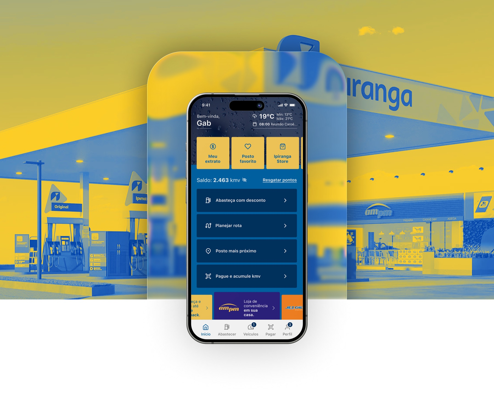
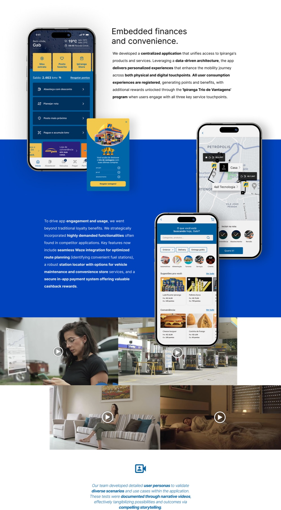
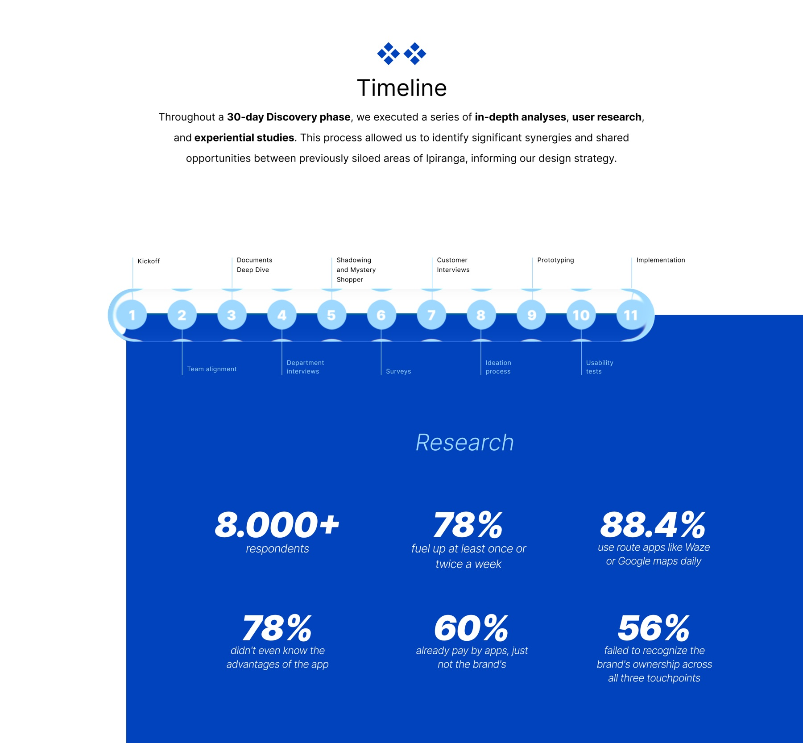

Felipe Amorim
Felipe AmorimSelected work / Ipiranga
Super app · Mobile product
A super app for everyday mobility.
A mobile product concept bringing Ipiranga's services into a single app experience.

Ipiranga
Product design
Mobile super app experience
The challenge
Many services in one place.
The published case presents Ipiranga's Super App through a mobile interface and branded service imagery.
My approach
Bring the product into focus.
The case visual centres the app interface within the wider Ipiranga service environment. See the original Behance project for its full screens and rationale.
Inside the work
A connected set of everyday services.
Selected original screens and product visuals from the Ipiranga Super App.


Next client brief